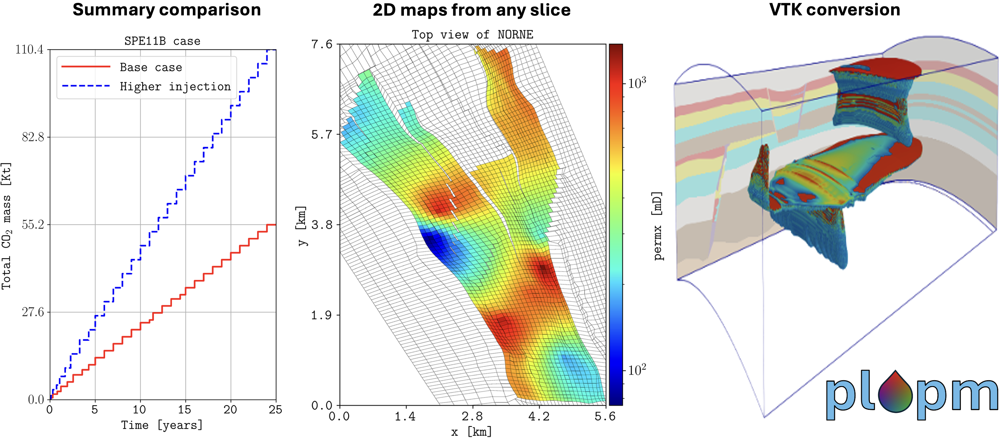

Introduction

This documentation describes the plopm tool hosted in https://github.com/cssr-tools/plopm.
Concept
Simplified and flexible framework for quick visualization of OPM Flow geological models. The approach is the generation of PNG figures from static (e.g, porosity, pore volume fluid in place numbers) and dynamic (e.g., pressure, fluid saturations) properties given any 2D slide with the option to generate GIFs (e.g., the middle part of a reservoir in the xy plane), as well as plotting any given summary vector (e.g., field gas in place a.k.a fgip).
The plopm tool can be useful for quick inspection of geological models, as well as for generation of nice figures for papers/presentations. Also, plopm can plot summary results from different simulation cases in the same figure (e.g., using subplots), as well as the difference between given dynamic variables (e.g., pressure) for two different simulations cases. In addition, plopm can convert OPM Flow output files to vtk, which allows to use other visualization/postprocessing tools (e.g., paraview).
Command-line options
The current implementation supports the following executable with argument options, e.g., :
plopm -i name(s)_of_input_file(s) -v name(s)_of_variables(s)
Tip
Type in the terminal plopm -h to show a short description of the argument options.
Value and list syntax
Commas normally separate entries within one specification, while spaces separate repeated specifications for different inputs, variables, or plots. Enclose the complete argument in quotes when it contains spaces.
For example:
-v "pressure,sgas"
-s "1,1,1 41,1,29 83,1,58"
-y "[0,10000] [0,23000]"
-histogram "50,norm 20,lognorm 100"
-log "1,1,0"
The separators have the following general meanings:
Commas separate components within one specification, such as
2,4,9,0,2,5, or[100,-50].Single spaces separate repeated specifications, such as
1,1,1 41,1,29 83,1,58or[0,10000] [0,23000].Two spaces separate free-text labels or titles when each value may itself contain spaces, such as
Reference case Modified case.Semicolons separate CSV column specifications for different inputs. An empty specification skips the corresponding input, such as
;1,2,5.Ampersands (&) join filter conditions for the same input.
Commas in -filter separate filter specifications for different inputs.
Empty entries may act as placeholders where an option applies only to selected inputs.
For example:
-labels "Reference case Modified case"
-filter "fluxnum == 2 & sgas >= 0.2, satnum != 5"
-i "table model" -v ",BWPR:256,1,5" -csv "1,3;"
Options
-i,--inputBase name or full path of the input. Separate multiple inputs with spaces, e.g.,
SPE11B /home/user/SPE11B_TUNED(SPE11Bby default).-o,--outputBase name or full path of the output folder (
.by default, i.e., the folder where plopm is executed).-v,--variableVariable specification(s) to plot. Separate variables with commas, e.g.,
pressure,sgas. Expressions are also supported, e.g.,pressure - 0pressure. An empty entry may be used as a placeholder when the corresponding input is configured through-csv, e.g.,-v ",BWPR:256,1,5" -csv "1,3;".Special variables include
grid,wells,faults,pcfact,limipres,overpres,objepres,krw,krg,krow,krog,pcow,pcog,pcwg,gasm,dism,liqm,vapm,co2m,h2om,xco2l,xh2ov,xco2v,xh2ol,fwcdm, andfgipm(poro,permx,permz,porv,fipnum,satnumby default).-m,--modeOutput format:
png,gif,csv, orvtk(pngby default).-s,--slideSlide or location in
i,j,kform. An empty entry selects a plane, e.g.,10,,; a range projects over cells, e.g.,,,5:10;:selects a line, e.g.,:,5,7; and three indices select a cell over time, e.g.,2,4,9. Separate multiple selections with spaces, e.g.,1,1,1 41,1,29 83,1,58(,1,by default).-r,--restartRestart step(s), where
0is the initial state and-1is the last. Separate selected steps with commas, e.g.,0,2or0,3,10,20, or usestart:end[:step], e.g.,1:3,0:4:2, or5:505:250. The default is-1; GIF output uses all available steps by default.-c,--colorsColormap, e.g.,
jet, or summary-plot colors separated by commas, e.g.,b,r(empty by default, i.e., set by plopm).-b,--boundsColor-scale limits in the requested display order, e.g.,
[-0.1,11]or[11,-0.1]. Separate limits for multiple plots with spaces (empty by default).-d,--dimensionsFigure width and height in inches, separated by a comma, e.g.,
8,16(7,5by default).-f,--sizeFont size (
12by default).-t,--titleFigure title. Separate titles for multiple plots with two spaces (
0by default).-suptitleTitle for a group of subfigures. Use
0to remove it (empty by default, i.e., set by plopm).-clabelColorbar label. Separate labels for multiple plots with two spaces (empty by default, i.e., set by plopm).
-xlabelX-axis label. Separate labels for multiple plots with two spaces (empty by default, i.e., set by plopm).
-ylabelY-axis label. Separate labels for multiple plots with two spaces (empty by default, i.e., set by plopm).
-facecolorColor outside the spatial map (
wby default, i.e., white).-dpiFigure resolution in dots per inch (
500by default).-x,--xlimX-axis limits in the requested display order, e.g.,
[-100,200]or[200,-100]. Separate limits for multiple plots with spaces, e.g.,[-100,200] [500,0](empty by default).-y,--ylimY-axis limits in the requested display order, e.g.,
[0,70]or[70,0]. Separate limits for multiple plots with spaces, e.g.,[0,10000] [0,23000](empty by default).-z,--scaleScale the axes equally in 2D maps:
0or1(1by default).-xlogEnable the logarithmic x-axis using
0or1. Comma-separated settings are accepted when different plots require different values (0by default).-ylogEnable the logarithmic y-axis using
0or1. Comma-separated settings are accepted when different plots require different values (0by default).-logEnable logarithmic color scaling using
0or1. Separate settings for multiple variables with commas, e.g.,1,1,0(0by default).-clogthksTick values for logarithmic color scales, enclosed by brackets and separated by commas, e.g.,
[1,10,100]. At least one corresponding-logsetting must be1(empty by default).-a,--adjustScaling factor applied to variable values, e.g.,
1e-9to display CO2 mass in Mt. Separate factors for multiple variables or plots with commas, e.g.,1e-5,1(1by default).-xformatX-axis number format, e.g.,
.2e(empty by default, i.e., set by plopm).-yformatY-axis number format, e.g.,
.1f(empty by default, i.e., set by plopm).-cformatColorbar number format, e.g.,
.2f(empty by default, i.e., set by plopm).-xlnumNumber of x-axis ticks (
5by default).-ylnumNumber of y-axis ticks (
5by default).-cnumNumber of colorbar ticks. Separate values for multiple plots with commas, e.g.,
3,6,2(empty by default, i.e., set by plopm).-cticksColorbar tick labels enclosed by brackets and separated by commas, e.g.,
[G,F,E,D,C,ESF](empty by default).-xunitsSpatial-map x-axis units:
mm,cm,m, orkm(mby default).-yunitsSpatial-map y-axis units:
mm,cm,m, orkm(mby default).-subfigsSubplot rows and columns separated by a comma, e.g.,
2,2for four subplots (empty by default, i.e., separate figures).-locLegend location passed to
matplotlib.pyplot.legend:best,upper right,upper left,lower left,lower right,right,center left,center right,lower center,upper center, orcenter. Useemptyto remove the legend (bestby default).-labelsSummary-plot legend labels, separated by two spaces, e.g.,
Reference case Modified case(empty by default, i.e., set by plopm).-lwLine widths separated by commas, e.g.,
1,2,1.5(empty by default, i.e., set by plopm).-e,--linestyleLine styles separated by commas, e.g.,
solid,dotted(empty by default, i.e., set by plopm).-axgridDisplay the summary-plot axis grid:
0or1(1by default).-removeRemove the left axis, bottom axis, colorbar, and title using four comma-separated values of
0or1(0,0,0,0by default).-howAggregation or selection method for 2D slices and projections. Supported values are
min,max,sum,mean,pvmean,harmonic,arithmetic,first, andlast. Separate methods for multiple variables or plots with commas, e.g.,first,arithmetic,max.By default, continuous variables are pore-volume weighted, extensive quantities are summed, indices retain discrete values, and permeabilities use directional harmonic or arithmetic averaging. For wells and faults,
minshows cells containing at least one occurrence, whilemaxrequires all projected cells to contain one (empty by default, i.e., selected automatically).-globalUse the current slice range (
0) or the whole 3D-model range (1) for color scaling (0by default).-filterCell-selection conditions. Join conditions for one input with
&and separate filters for different inputs with commas, e.g.,fluxnum == 2 & sgas >= 0.2, satnum != 5(empty by default). Dynamic variables such assgasrequireRPORVinRPTRST.-vminMinimum threshold used to remove variable values (empty by default).
-vmaxMaximum threshold used to remove variable values (empty by default).
-maskStatic variable used as the 2D-map background (empty by default).
-maskthrThreshold for the variable supplied through
-mask(1e-3by default).-ensembleEnsemble plotting mode:
1for mean and error bands,2for minimum, mean, and maximum, or3for both. Use0to disable ensemble plotting (0by default).-bandpropFill colors and alpha values as comma-separated pairs, e.g.,
r,0.1,g,0.2. Used with-ensemble 1or-ensemble 3(empty by default, i.e., the mean color with alpha 0.2).-histogramHistogram bins and optional distribution, e.g.,
20,20,norm, or20,lognorm. Separate specifications for multiple plots with spaces, e.g.,50,norm 20,lognorm 100(empty by default, i.e., no histogram).-distanceCompute the minimum or maximum distance to a sensor or lateral border:
min,sensor,max,sensor,min,border, ormax,border. For a sensor, provide itsi,j,klocation with-s, e.g.,-s 1,2,3 -v "sgas > 1e-2" -distance max,sensor(empty by default).-stressStress coefficient used to compute pressure limits for
limipres,overpres, andobjepres(0.134by default).-rotateGrid rotation angle in degrees for 2D maps (
0by default).-translateGrid translation in the x and y directions, e.g.,
[100,-50]([0,0]by default).-csvCSV column indices, starting at 1. Use
t,valuefor a time series orx,y,valuefor a spatial map. Separate specifications for different inputs with semicolons; an empty specification skips the corresponding input, e.g.,;1,2,5or1,3;(empty by default).-tunitsSummary x-axis time units:
s,m,h,d,w,y,dates,empty, ortstep(dby default).-saveOutput file name (empty by default, i.e., set by plopm).
-p,--pathPath or command for the Flow executable, e.g.,
/home/build/bin/flow. Used only to generate the grid for VTK output (flowby default).-vtkformatVTK format for each variable:
Float64,Float32,Float16,Int64,UInt64,Int32,UInt32,Int16,UInt16,Int8, orUInt8. Separate formats for multiple variables with commas (Float64by default). This option applies only to VTK output.-vtknamesCustom VTK variable names separated by commas (empty by default, i.e., use the names supplied through
-v). This option applies only to VTK output.-diffBase name or full path of the input model to subtract (empty by default).
-ncolorColor for inactive cells in 2D maps (
wby default, i.e., white).-gridpcolormeshedge color and line width separated by a comma, e.g.,black,1e-3(empty by default, i.e., no grid).-cbsfaxGlobal colorbar position and size as
left,bottom,width,height, e.g.,0.40,0.01,0.2,0.02. Useemptyto remove it (0.40,0.01,0.2,0.02by default).-delaxRemove duplicated axis labels in subplots:
0or1(0by default).-printvPrint the available variables:
0or1(0by default).-dualEnable dual-grid processing using
0or1(0by default).-intervalGIF frame interval in milliseconds (
1000by default). This option applies only to GIF output.-loopLoop GIFs indefinitely using
0or1(0by default). This option applies only to GIF output.-stepUse
ax.stepinstead ofax.plot:0or1(0by default).